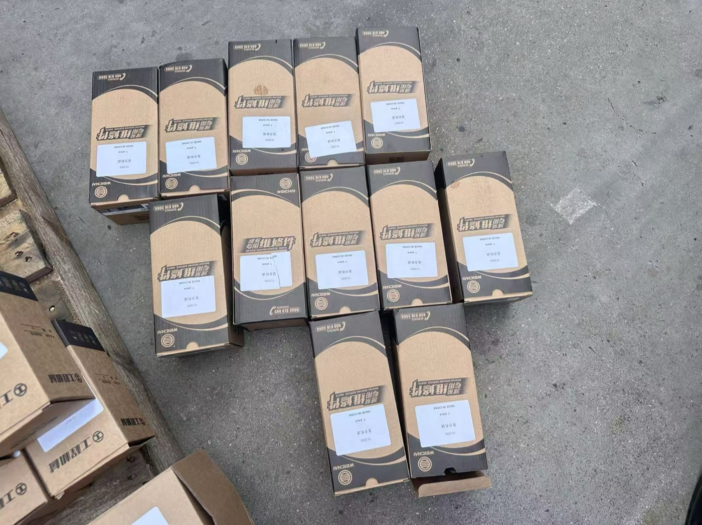
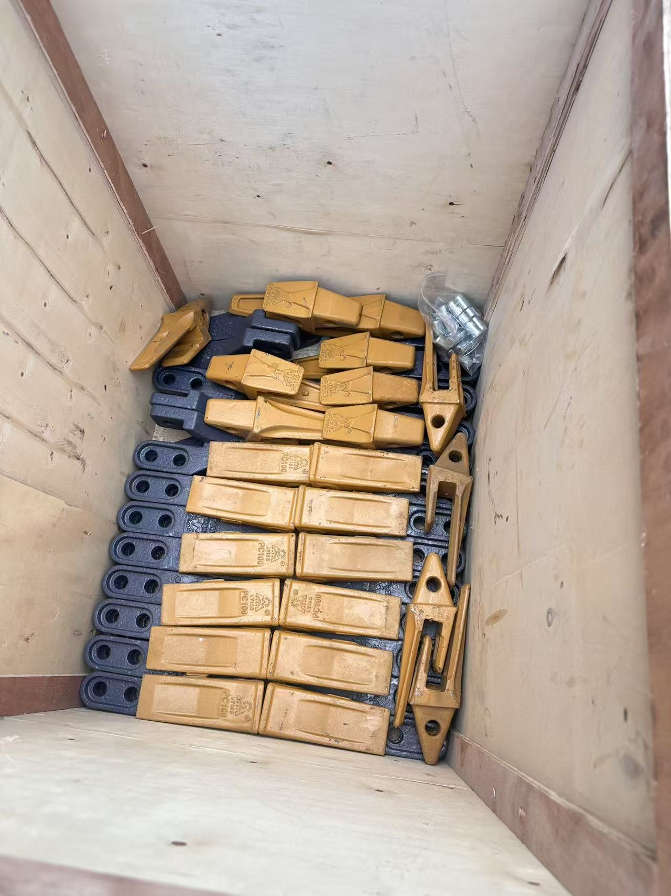
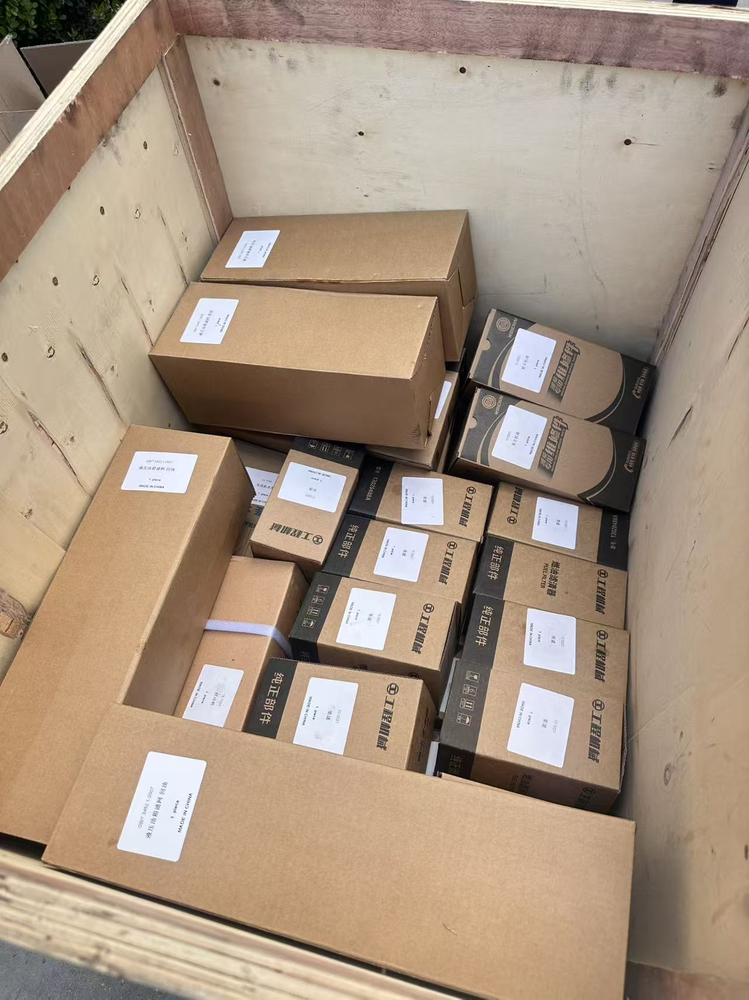

Before a machine ships, everything that goes with it gets laid out and checked. This is the moment to decide what else belongs in the container — because the next chance to send anything costs far more.
The Cheapest Parts Shipment You Will Ever Make
Think about how your machine actually reaches you. It does not travel alone — it goes into a container or onto a flat rack, and that shipping space is bought and paid for whether the crate next to it is full or empty. A box of filters, a set of seals, four hydraulic hoses, and a handful of bucket teeth take up a small corner and add a few kilos. In practice they ride along for almost nothing.
Now jump forward six months. That same filter clogs, that same seal weeps, and the machine stops in the middle of a job. The part itself may be cheap. Getting it to you is not. It becomes an air-freight shipment with its own customs entry, its own paperwork, and its own delay — and the delay is the expensive part, because your machine is sitting still while you wait. A part that costs the price of a meal can turn into a week of lost work.
This is the whole idea in one sentence: on the day you buy the machine, shipping is free; on every other day of its life, shipping is not. That asymmetry is the argument for stocking a small kit — not a warehouse, a kit.
What Actually Fails — The Honest List
Before you can decide what to stock, you need to know what actually breaks. Not what a parts catalogue would like to sell you, but what I see coming back through the workshop on machines that have done real hours. It is almost never the big dramatic components. It is the small, boring, predictable ones:
- Filters. Engine oil, fuel, hydraulic return, and air filters are consumables by design. They are replaced on a schedule, so they will be needed — the only question is whether you have them on the shelf when the hour meter says it is time.
- Seals and O-rings. The backhoe boom and swing cylinders carry the most load and the most pressure cycles, so they are the first places a weep appears. A hardened seal does not warn you — it just starts leaving oil on the ground.
- Hydraulic hoses. High-pressure lines fail at chafe points and at crimped ends, usually after hundreds of hours. A machine cannot work with a burst hose, and it is one of the most common unplanned stops there is.
- Bucket teeth and cutting edges. These are wear parts by definition. If you are digging in hard ground, you will replace them — the only choice is whether you planned for it.
- Pins and bushings. Every pivot on the loader arms and backhoe wears and slowly develops play. Replacing a worn pin early protects the much more expensive bore it sits in.
- Tires and tubes. Punctures happen on any site. Tubes are cheap and light; a full spare tire is heavier, so decide based on how easily you can source one locally.
- Small electrical items. Switches, sensors, and relays are cheap, light, and occasionally just die. These are exactly the kind of part that is annoying to be without.
- Grease and fluids. You need to know the correct specification — but unless fluids are genuinely hard to get in your market, buy them locally. They are heavy, and shipping weight is money.
Notice the pattern: the parts that stop a machine for days are almost all small and cheap. That is precisely why they belong in the first container.

Bucket teeth and retaining bolts, packed for a customer. Heavy for their size, cheap for what they do — and the reason a machine stops digging. Adding a box like this to a container that is already going costs almost nothing.
The Three-Question Test
You do not need a spreadsheet to decide. Run every candidate part through three questions:
- How often does it fail? A part that wears out on a known schedule is predictable, and predictable means stockable. A part that essentially never fails on a maintained machine is not.
- If it fails, how long can the machine sit before it costs you real money? If the machine stopping for two weeks means a broken contract, that part is worth carrying. If you have a second machine or a slow season, you can afford to wait.
- How much does it cost to send this part on its own? Anything light and awkward to source locally scores high. Anything heavy and available in your nearest city scores low.
If a part fails occasionally, stops the machine when it does, and is expensive or slow to ship alone — put it in the container. If it is cheap and sitting on a shelf in your nearest city — buy it there. If it essentially never fails — leave it alone.
The Starter Kit I Would Actually Put in the Container
This is a reasonable starting point for a first machine. It is not a rule; it is a shape. Adjust it by machine size, by how remote your site is, and by how much downtime actually costs you:
- One or two complete filter sets — engine oil, fuel, hydraulic return, and air. Two sets covers you for a full service interval without reordering.
- A seal and repair kit for the backhoe boom and swing cylinders — the highest-load joints on the machine.
- Two to four hydraulic hoses in the sizes and lengths most likely to fail first. Ask which ones those are for your model — a good supplier knows.
- A set of bucket teeth and retaining pins matched to the bucket you ordered.
- A set of pins and bushings for the main pivots — cheap insurance against wearing out an expensive bore.
- A handful of small electrical spares — the switches and sensors that are cheap, tiny, and irritating to be without.
- Grease nipples and a spare grease gun, because a machine that cannot be greased is a machine that is aging faster than it should.
One practical note: ask for the part numbers in the quote, not just descriptions. When you reorder in two years, a part number is what prevents the wrong part arriving — and it also lets you price the same part locally to see whether you are being treated fairly.

A starter kit packed and labelled — this is roughly how much space a sensible first spares set takes up. Look at the labels on the boxes: part number, machine, quantity. Two years from now, that label is the difference between a five-minute fix and an hour of guesswork.
What to Skip
The other half of good parts math is knowing what not to buy. Overspending on a first parts kit is just as common as underspending, and it is usually driven by fear rather than arithmetic:
- A spare engine, transmission, or complete hydraulic pump. These are the parts that essentially do not fail on a maintained machine — and if one fails early, that is a warranty conversation, not a reason to have a spare sitting in your yard rusting. They are heavy, expensive, and the wrong use of your money.
- More than one spare tire. Tires are bulky and heavy, and in most markets you can source a replacement locally within days. One spare tube or tire if your site is remote; beyond that, you are paying freight to store rubber.
- A full attachment set "because it is cheap to add now." This is where first-time buyers overspend most. Buy the attachments you have a job for — not the ones that look good on a list. You can always add more later, and a rarely used attachment is money sitting idle.
- "Fits most models" generic parts. A cheap universal seal that does not match your exact model will leak, and then you have paid twice. Match the part to the machine.
The Math, Without Fake Numbers
I am not going to quote you prices here, and you should be suspicious of anyone who does — part prices move, freight rates move, and your country's import duty changes the answer completely. What does not change is the shape of the calculation. It looks like this:
Cost of stocking a part now = part price + a small amount of freight weight. The second term is tiny when the container is already going.
Cost of not stocking it = (days the machine is down × what a day of lost work costs you) + air freight + expedite fees + customs delay on a solo shipment. The first term is usually the one that dwarfs everything else.
Write those two lines down for the parts you are considering and the answer is usually obvious. The reason we hesitate is not that the math is hard — it is that the cost of downtime is invisible until it happens. Experienced fleet buyers I work with treat the first parts kit as a small line item next to the machine, and they are almost never wrong to.
Here is a test worth applying to any supplier: ask for two quotes — one for the machine with a spares kit, and one for the same spares shipped separately later. If they cannot produce the second one, that tells you something about what parts support will look like in year three.

Once this container leaves, every part that is not inside it becomes a separate shipment with its own cost and its own delay. That is the whole reason to plan the spares list before loading day, not after.
Store Them So They Work When You Need Them
A spare part that has been ruined by bad storage is the same as no spare part at all — except you paid for it. Parts need a home that keeps them usable:
- Seals, O-rings, and rubber parts. Keep them in their original sealed bags, out of sunlight and away from electric motors that produce ozone. Rubber has a shelf life, and sun and heat shorten it. Cool, dark, and dry is correct.
- Filters. Keep them sealed and off the floor. A filter that has absorbed damp air is not a filter you want to fit to an engine.
- Hoses. Store them straight or in gentle curves, never with a tight kink, and cap the ends so grit and moisture stay out.
- Label everything. Part number, the machine it fits, and the date you received it. Two years from now, that label is the difference between a five-minute fix and an hour of guesswork.
- Keep a simple parts log. Note what you used and when, and set a reorder point for anything you have used twice. That log turns guesswork into a schedule.
The Real Question: Can You Get a Part Next Year?
Everything above assumes the parts exist and that you can order more. That is worth verifying before you send money, because it is the thing buyers discover far too late. So ask your supplier directly, and listen for whether the answer is a process or a promise:
- How do I order a part — what reference do you need? (A good answer mentions the model and serial number, or a photo of the part.)
- What is your typical response time for a parts enquiry?
- Can you send a photo of the exact part before it ships, so I can confirm it is right?
A supplier with real parts support answers these with steps. A supplier who only wants to sell machines answers them with reassurance. You can also read more about how parts fit into the whole machine in my backhoe loader parts guide.
From my side: if you send me your model and serial number — or simply a photo of the part you need, even a dirty one — I will confirm the correct part number and get it to you. That is not a special favour; it is what the relationship is supposed to look like after the invoice is paid.
The Point of All This
The goal is not to build a warehouse in your yard. It is to spend a small amount of money at the one moment when shipping is free, so that a cheap part never turns into an expensive week. Stock the things that stop work. Buy the rest when you need it.
And be honest with yourself about the trade-off: a machine is a tool, not a museum. Over-stocking is its own waste, and the buyers who get this right are not the ones who buy everything — they are the ones who think about which three failures would actually hurt, and cover those.
If you are ordering a machine and want a spares list put together alongside the quote, send me the model and the kind of work you do. I would rather hand you an honest, short list than a long one you will never use.
Want a Spares List Priced With Your Machine?
Send me the model you are considering and what you will be using it for. I will put together a short, honest list of spares worth shipping in the container — with part numbers — and tell you which lines are genuinely worth it for your market, and which you can safely buy locally.
WhatsApp Vivian About Spares